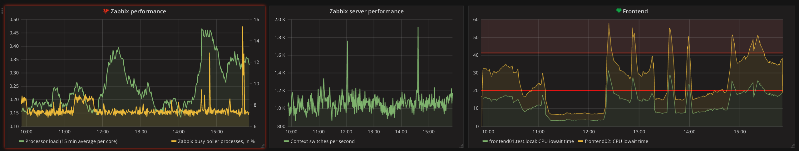

Alerting
Since version 4.0 Grafana has its own alerting engine.
Alerting in Grafana allows you to attach rules to your dashboard panels. When you save the dashboard Grafana will extract the alert rules into a separate alert rule storage and schedule them for evaluation.
In the alert tab of the graph panel you can configure how often the alert rule should be evaluated and the conditions that need to be met for the alert to change state and trigger its notifications.
Read more about alerting feature in Grafana docs.
On the other hand, Zabbix has its own alerting system with triggers, events and notifications. And the best way is to combine benefits of these systems into Zabbix plugin for Grafana. So how it works you'll ask? Grafana alerting feature consists of two main parts:
- Alerting execution engine
The alert rules are evaluated in the Grafana backend in a scheduler and query execution engine that is part of core Grafana. Only some data sources are supported right now. They include Graphite, Prometheus, InfluxDB and OpenTSDB. - Alerting visualisations
Alerts highlight panels with problems and it can easily be found on the dashboard.
So Zabbix plugin doesn't use execution engine and doesn't allow to configure rules in Grafana. But it fetches information about triggers related to metrics at particular panel and fires alert state for these panels.

So there are three possible cases for each panel:
- Panel contains Zabbix items which are used in triggers:
- At least one of these related triggers is in the PROBLEM state.
In this case panel will be highlighted with the red glow and broken heart icon. - All triggers are in the OK state.
Panel will be displayed with green heart icon without highlighting.
- At least one of these related triggers is in the PROBLEM state.
- There aren't triggers related to items on panel.
Panel will be displayed without any changes.
Note, that only triggers with severity above than configured at Data Source config page will be used for panel state calculation.
Also plugin can extract thresholds from trigger expression and set it on graph. You can enable this feature in Data Source config. Thresholds are parts of panel JSON data, so it will be stored in backend if you save dashboard, but plugin marks this thresholds with special tag, so it will be changed or deleted if you change it in Zabbix.